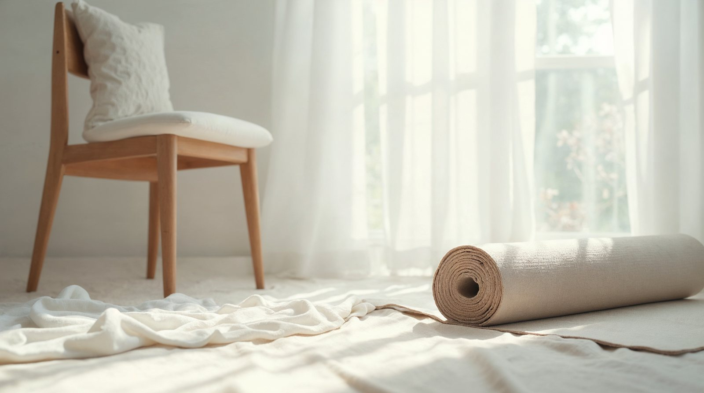
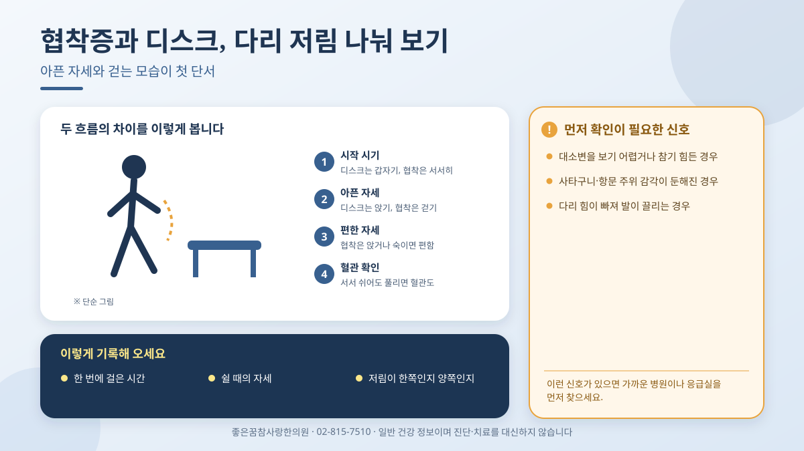

이종호 한의사 감수좋은꿈참사랑한의원 대표원장 (한의사 면허번호 19769)발행 2026-11-26 · 수정 2026-11-26
이 글의 차례
진료실 의자에 앉으시자마자 한숨을 쉬시는 분이 있습니다. "동네 친구는 협착증이라고 하고, 아들은 디스크 같다고 하네요. 저는 도대체 어느 쪽인가요?" 다리 저림은 똑같은데 주변에서 듣는 이름이 제각각이니 마음이 더 복잡해집니다.
척추관 협착증과 허리디스크는 둘 다 허리에서 나가는 신경이 눌리거나 자극을 받아 다리가 저리고 아픈 상태라는 점에서 닮았습니다. 그래서 헷갈리시는 것이 당연합니다. 하지만 눌리는 방식과 아픈 자세, 생기는 나이에서 꽤 다른 모습을 보입니다.
정확한 구분은 영상 검사와 진찰을 함께 보는 정형외과나 신경외과에서 하게 됩니다. 다만 두 흐름의 차이를 알아 두시면 내 몸에서 일어나는 일을 이해하기 쉽고, 진료 때 어떤 이야기를 해야 하는지도 분명해집니다.
또 실제로는 두 가지가 함께 있는 분도 많습니다. 디스크가 조금 밀려 나온 위에 척추관이 좁아지는 변화가 겹치기도 합니다. 그래서 '어느 쪽이냐'보다 '지금 내 저림은 어떤 모양이냐'를 먼저 살피는 것이 실제 생활에는 더 쓸모가 있습니다.
두 가지는 어떻게 생기나요
허리디스크는 허리뼈 사이의 쿠션 속이 뒤로 밀려 나와 신경을 누르는 상태입니다. 무거운 것을 들거나 허리를 숙이고 비트는 동작 뒤에 비교적 갑자기 생기는 경우가 많고, 활동량이 많은 20~50대에서 흔히 봅니다.
척추관 협착증은 신경이 지나가는 통로인 척추관이 오랜 세월에 걸쳐 좁아지는 상태입니다. 인대가 두꺼워지고 뼈 가장자리가 자라며 관절이 커지면서 통로가 좁아집니다. 대개 몇 달, 몇 년에 걸쳐 서서히 진행되고 50~60대 이후에 흔합니다.
비유하자면 디스크는 통로 안으로 무언가가 불쑥 튀어나온 것이고, 협착증은 통로의 벽이 천천히 두꺼워져 길이 좁아진 것입니다. 그래서 디스크는 갑자기, 협착증은 서서히 시작되는 경우가 많습니다.
왜 아픈 자세가 서로 다를까요
두 가지를 나눠 보는 가장 쉬운 단서는 어떤 자세에서 편하고 어떤 자세에서 아픈가입니다. 그 차이는 허리를 숙이고 젖힐 때 척추 안에서 일어나는 변화와 관련이 있습니다.
허리를 앞으로 숙이면 디스크 안쪽의 압력이 높아집니다. 그래서 디스크가 있는 분은 앉아 있을 때, 허리를 숙일 때, 기침이나 재채기를 할 때 다리로 찌릿함이 더 뻗치는 경우가 많습니다. 오히려 서 있거나 걸을 때가 편하다고 하시는 분도 있습니다.
반대로 허리를 뒤로 젖히면 척추관이 더 좁아집니다. 그래서 협착증이 있는 분은 서 있거나 걸을 때 다리가 저려 오고, 허리를 숙이거나 앉으면 풀리는 경우가 많습니다. 쇼핑 카트를 밀거나 자전거를 탈 때 편하다고 하시는 것도 허리가 약간 숙여지기 때문입니다.
한눈에 보는 차이
아래는 흔히 보이는 모습을 정리한 것입니다. 모든 분이 이 틀에 꼭 맞지는 않으니 참고로만 보세요.
- 시작: 디스크는 비교적 갑자기, 협착증은 서서히
- 흔한 나이: 디스크는 활동이 많은 연령, 협착증은 중년 이후
- 아픈 자세: 디스크는 앉기·숙이기, 협착증은 서기·걷기·젖히기
- 편한 자세: 디스크는 서기·눕기, 협착증은 앉기·숙이기
- 다리 모양: 디스크는 한쪽 다리로 뻗치는 통증, 협착증은 양쪽 다리가 무겁고 저린 경우도 흔함
- 걷기: 협착증은 걸을수록 저려서 쉬었다 가기를 되풀이하는 경우가 많음
협착증에서 걸을수록 다리가 저리고 무거워져서 잠깐 앉거나 허리를 숙여 쉬면 다시 걸을 수 있는 모습을 간헐적 파행이라고 부릅니다. 한 번에 걸을 수 있는 거리가 점점 줄어든다면 기록해 두셨다가 꼭 말씀해 주세요.
혈관 문제와 헷갈리지 않도록
걸으면 다리가 아파 쉬어야 하는 모습은 다리 혈관이 좁아진 경우에도 나타날 수 있습니다. 이때는 허리 자세와 상관없이 서서 쉬기만 해도 풀리고, 발이 차고 창백하거나 발등 맥박이 약하게 느껴지는 경우가 있습니다. 상처가 잘 아물지 않거나 발가락 색이 변하는 것도 혈관 쪽 신호로 봅니다.
협착증은 허리를 숙이거나 앉아야 풀리는 경우가 많고, 자전거처럼 허리를 숙인 자세에서는 오래 버티는 경우가 많습니다. 반면 혈관 문제는 자전거를 타도 다리가 아파 오는 경우가 많습니다. 흡연, 당뇨, 고혈압이 있는 분은 혈관 쪽 확인을 함께 받아 보시길 권합니다.
양쪽 발끝부터 고르게 저려 올라오는 경우는 허리보다 당뇨 같은 말초 신경 문제를 먼저 확인합니다. 이렇게 다리 저림은 허리, 혈관, 신경 여러 길에서 올 수 있어 한 가지로 단정하지 않고 살핍니다.
병원 검사 결과를 볼 때
MRI 결과지에는 디스크 팽윤, 돌출, 척추관 협착, 신경공 협착 같은 단어가 여러 개 함께 적혀 있는 경우가 많습니다. 여러 마디에 걸쳐 변화가 적혀 있으면 덜컥 겁이 나시는데, 그 모든 변화가 지금의 통증을 만드는 것은 아닙니다.
중요한 것은 어느 마디의 변화가 지금 다리 저림의 위치와 맞아떨어지는가입니다. 예를 들어 종아리 바깥과 발등이 저린지, 발바닥과 새끼발가락 쪽이 저린지에 따라 관련된 신경의 높이가 달라집니다. 이 연결은 영상을 직접 본 병원 선생님의 설명이 가장 정확합니다.
결과지를 받으셨다면 어느 마디가 지금 증상과 가장 관련이 있는지, 지켜볼 때 무엇을 조심해야 하는지 병원에서 한 번 더 여쭤 보시길 권합니다. 그 설명을 한의원에 함께 전해 주시면 진료 방향을 정하는 데 큰 도움이 됩니다.
나이와 생활에 따라 달라지는 모습
젊은 직장인이나 학생이 오래 앉아 있다가, 혹은 무거운 것을 든 뒤에 한쪽 다리가 찌릿해졌다면 디스크 쪽을 먼저 생각하게 됩니다. 이런 분은 앉는 시간과 자세를 다듬는 것이 관리의 중심이 됩니다.
연세 드신 분이 몇 년 전부터 조금씩 걷는 거리가 줄고, 시장 한 바퀴를 돌다 몇 번씩 쉬게 되었다면 협착증 쪽을 먼저 생각하게 됩니다. 이런 분은 쉬어 가며 걷는 요령과 다리 힘을 지키는 것이 중심이 됩니다.
중년에는 두 가지가 섞여 있는 경우가 흔합니다. 앉아도 불편하고 오래 걸어도 불편하다고 하시는 분이 많아서, 어느 자세가 조금 더 불편한지를 세심하게 나눠 봅니다.
두 가지를 두고 자주 헷갈리는 것
첫째, 영상에 나온 이름이 곧 지금 통증의 원인이라는 생각입니다. 나이가 들면 증상이 없어도 영상에서 디스크나 협착 변화가 보이는 경우가 많습니다. 영상 소견과 지금의 증상이 맞아떨어지는지 함께 보는 것이 중요합니다.
둘째, 협착증은 나이 탓이니 어쩔 수 없다는 생각입니다. 통로가 좁아진 것은 되돌리기 어렵더라도, 걷는 거리와 일상의 불편은 자세와 움직임, 근육의 상태에 따라 꽤 달라질 수 있습니다. 포기하기보다 지금 할 수 있는 것을 찾는 편이 좋습니다.
셋째, 디스크든 협착증이든 허리 운동은 다 같다는 생각입니다. 디스크가 있는 분에게 편한 허리 젖히기 동작이 협착증이 있는 분에게는 저림을 키울 수 있고, 반대도 마찬가지입니다. 그래서 운동은 진찰 뒤 내 몸에 맞게 고르는 것이 좋습니다.
먼저 이렇게 여쭙니다
처음 오시면 저는 대략 이런 순서로 여쭙니다. 떠오르는 대로 말씀해 주시면 됩니다.
- 다리 저림은 언제부터, 갑자기 생겼나요, 서서히 생겼나요?
- 한쪽 다리인가요, 양쪽 다리인가요? 어디까지 내려가나요?
- 앉아 있을 때와 걸을 때 가운데 언제 더 저린가요?
- 한 번에 몇 분 정도 걸으면 쉬어야 하나요? 쉬면 다시 걸을 수 있나요?
- 기침이나 재채기에 다리로 찌릿함이 오나요?
- 당뇨나 혈압, 흡연, 드시는 약이 있나요?
허리와 다리 진료 때는 대소변 변화가 없는지도 모든 분께 여쭙습니다. 허리 아래 신경과 관련된 중요한 확인이니 편하게 말씀해 주세요.

일상에서 먼저 해 볼 수 있는 것
어느 쪽에 가까운지에 따라 편한 자세가 서로 반대인 경우가 많기 때문에, 먼저 내 몸이 어느 자세에서 편한지를 알아 두는 것이 관리의 출발점입니다.
앉아 있을 때 저림이 심한 분이라면 이렇게 해 보세요.
- 30~40분마다 일어나 가볍게 걷기
- 엉덩이를 깊숙이 넣고 등받이에 기대 앉기
- 허리를 숙여 무거운 것을 드는 동작 줄이기
걸을 때 저림이 심한 분이라면 이렇게 해 보세요.
- 저려 오기 전에 미리 쉬어 가며 걷기
- 쉴 때는 벤치에 앉거나 허리를 살짝 숙여 쉬기
- 장을 볼 때 카트에 기대 걷기
- 허리를 뒤로 크게 젖히는 동작 줄이기
계단을 오르내릴 때는 난간을 잡고 한 칸씩 천천히 움직이시고, 무거운 장바구니는 바퀴 달린 수레를 쓰시면 허리 부담이 줄어듭니다.
공통으로 도움이 되는 것은 무리 없는 범위에서 꾸준히 움직이는 것입니다. 협착증이 있는 분은 실내 자전거처럼 허리가 약간 숙여지는 운동이 편한 경우가 많고, 디스크가 있는 분은 평지 걷기부터 시작하시는 경우가 많습니다.
잠자리에서는 무릎 아래나 무릎 사이에 베개를 두면 허리가 편해지는 분이 많습니다. 협착증이 있는 분은 바로 눕는 것보다 옆으로 누워 무릎을 살짝 굽힌 자세를 편하게 느끼시기도 합니다.
한의원에서 함께 살필 수 있는 경우
- 병원 진단 뒤 지켜보며 관리하자는 이야기를 들은 경우
- 걸을 수 있는 시간이 줄어 장보기나 산책이 힘든 경우
- 앉아 있으면 엉덩이와 다리가 당겨 일하기 어려운 경우
- 허리와 엉덩이 근육이 굳어 아침마다 몸이 무거운 경우
- 다리 저림 때문에 잠을 설치는 경우
좋은꿈참사랑한의원에서는 먼저 아래의 '먼저 확인이 필요한' 신호가 없는지부터 봅니다. 그다음 맥을 짚고, 아픈 자세와 걷는 모습, 다리의 감각과 힘을 확인하며 지금 저림이 어떤 흐름에 가까운지 살핍니다.
진찰한 내용에 따라 침 치료, 척추와 골반의 움직임을 보고 세기를 고르는 추나, 필요한 경우 초음파로 위치를 확인하며 놓는 약침 가운데 지금 상태에 맞는 것을 정합니다. 연세가 있으신 분은 부드러운 기법부터 시작합니다. 한약을 상의할 때는 드시는 약을 확인한 뒤 신중하게 정합니다.
병원에서 처방받은 약은 상의 없이 멈추지 마세요. 수술이나 시술이 필요한지는 정형외과·신경외과에서 판단할 일이며, 한의원 진료는 그 판단과 나란히 갑니다.
이렇게 기록해 오시면 상담이 쉬워집니다
협착증과 디스크를 나눠 보는 데는 일상의 기록이 큰 단서가 됩니다. 1~2주 정도 적어 보세요.
- 한 번에 걸을 수 있었던 시간과 쉬어야 했던 횟수
- 쉴 때 어떤 자세로 쉬었는지(서서, 앉아서, 숙여서)
- 앉아 있던 시간과 저림이 시작된 시점
- 저림이 내려간 범위와 한쪽인지 양쪽인지
- 밤에 다리 저림이나 쥐로 깬 횟수
특히 '몇 분 걸으면 쉬어야 하는지'는 꼭 적어 두세요. 이 숫자가 늘어나는지 줄어드는지가 앞으로의 방향을 정하는 데 가장 쓸모 있는 기록이 됩니다.
이름보다 오늘의 걸음을
협착증이든 디스크든, 결국 중요한 것은 내가 오늘 얼마나 편하게 걷고 앉을 수 있느냐입니다. 이름은 방향을 잡는 데 도움이 되지만, 생활을 바꾸는 것은 작은 습관입니다.
다리 저림이 오래가면 걷기가 겁나서 외출을 줄이게 되고, 움직임이 줄면 다리 힘이 약해져 다시 걷기가 더 힘들어지는 흐름에 빠지기 쉽습니다. 이 고리를 끊는 첫걸음은 짧더라도 매일 걷는 것입니다. 오늘 5분을 걸었다면 그것으로 충분히 의미가 있습니다.
가족이 함께 오시면 걷는 모습을 옆에서 본 이야기를 들려주셔도 좋습니다. 본인은 잘 모르는 걸음의 변화나 쉬는 횟수를 가족이 먼저 알아차리는 경우가 많습니다.
이번 주에는 내 몸이 편한 자세 하나를 찾아보세요. 앉는 게 편한지, 걷는 게 편한지. 그 답과 함께 한 번에 걸을 수 있었던 시간을 적어 오시면, 그다음 걸음을 함께 정하겠습니다. 작은 기록이 쌓이면 내 몸의 흐름이 조금씩 보이기 시작합니다.
이런 증상은 먼저 확인이 필요합니다
- 대소변을 보기 어렵거나 참기 힘들고, 사타구니와 항문 주위 감각이 둔해진 경우
- 다리에 힘이 빠져 발이 끌리거나 걷다가 주저앉을 듯한 증상이 빠르게 심해지는 경우
이런 신호가 있으면 한의원보다 가까운 병원이나 응급실을 먼저 찾으세요.
함께 읽으면 좋은 글
- 걸으면 다리가 저려 자꾸 쉬어야 하는 척추관 협착증은 어떻게 살피나요?
- 허리 디스크 초기 신호와 다리 저림은 어떻게 구분하나요?
- 허리뼈가 앞으로 밀렸다는 척추전방전위증은 어떻게 살피나요?
- 디스크가 닳았다는 말을 들었을 때, 퇴행성 디스크는 무엇이고 어떻게 살피나요?
- 60대에 걷기 운동을 새로 시작할 때 무릎과 허리는 어떻게 점검하나요?

여쭙는 것
- 다리 저림은 언제부터, 갑자기 생겼나요, 서서히 생겼나요?
- 한쪽 다리인가요, 양쪽 다리인가요? 어디까지 내려가나요?
- 앉아 있을 때와 걸을 때 가운데 언제 더 저린가요?
생활에서 해 볼 것
- 30~40분마다 일어나 가볍게 걷기
- 엉덩이를 깊숙이 넣고 등받이에 기대 앉기
- 허리를 숙여 무거운 것을 드는 동작 줄이기
한의원에서 함께 살필 것
- 병원 진단 뒤 지켜보며 관리하자는 이야기를 들은 경우
- 걸을 수 있는 시간이 줄어 장보기나 산책이 힘든 경우
- 앉아 있으면 엉덩이와 다리가 당겨 일하기 어려운 경우
먼저 확인이 필요한 신호
- 대소변을 보기 어렵거나 참기 힘들고, 사타구니와 항문 주위 감각이 둔해진 경우
- 다리에 힘이 빠져 발이 끌리거나 걷다가 주저앉을 듯한 증상이 빠르게 심해지는 경우
한눈에 보는 표
| 구분 | 핵심 |
|---|---|
| 여쭙는 것 | 다리 저림은 언제부터, 갑자기 생겼나요, 서서히 생겼나요? 한쪽 다리인가요, 양쪽 다리인가요? 어디까지 내려가나요? |
| 생활에서 해 볼 것 | 30~40분마다 일어나 가볍게 걷기 엉덩이를 깊숙이 넣고 등받이에 기대 앉기 |
| 한의원에서 함께 살필 것 | 병원 진단 뒤 지켜보며 관리하자는 이야기를 들은 경우 걸을 수 있는 시간이 줄어 장보기나 산책이 힘든 경우 |
| 먼저 확인이 필요한 신호 | 대소변을 보기 어렵거나 참기 힘들고, 사타구니와 항문 주위 감각이 둔해진 경우 다리에 힘이 빠져 발이 끌리거나 걷다가 주저앉을 듯한 증상이 빠르게 심해지는 경우 |
자주 묻는 질문
협착증과 디스크가 함께 있을 수도 있나요?
네, 함께 있는 분도 많습니다. 디스크가 조금 밀려 나온 위에 척추관이 좁아지는 변화가 겹치기도 합니다. 그래서 이름 하나보다 지금 어떤 자세에서 저린지를 함께 살핍니다.
걸으면 다리가 저린데 그러면 협착증인가요?
그렇지는 않습니다. 다리 혈관이 좁아진 경우에도 비슷한 모습이 나타날 수 있습니다. 서서 쉬기만 해도 풀리는지, 발이 차고 창백한지 등을 함께 보고 필요하면 혈관 확인을 안내합니다.
협착증이 있으면 허리를 젖히는 운동은 피해야 하나요?
허리를 크게 젖히면 저림이 심해지는 분이 많아서, 그런 경우에는 줄이시길 권합니다. 다만 사람마다 편한 동작이 달라 진찰 뒤 맞는 동작을 함께 정합니다.
한의원에서 협착증인지 디스크인지 진단해 주시나요?
진찰로 어느 흐름에 가까운지 살피지만, 영상으로 확인하는 진단은 정형외과나 신경외과에서 받으시도록 안내합니다. 결과가 있다면 가져와 주시면 함께 보며 진료 방향을 정합니다.
걷는 거리가 줄어들 때 운동을 아예 쉬어야 하나요?
쉬기보다 저려 오기 전에 미리 쉬어 가며 나눠 걷는 방법을 권합니다. 실내 자전거처럼 허리가 약간 숙여지는 운동이 편한 분도 많아서, 진찰 뒤 맞는 방법을 함께 정합니다.
좋은꿈참사랑한의원은 재진 때 지난번 이야기부터 이어서 여쭙니다. 진료시간과 예약은 오시는 길에서 확인하세요.
어디서 상담받을 수 있나요?
좋은꿈참사랑한의원은 서울 동작구 만양로2길 2 신성빌딩 3층·5층(서울 동작구 상도동, 7호선 상도역 3번 출구 근처)에 있습니다. 한의사 3명(이종호 대표원장, 조영기 수석진료원장, 정원영 진료원장)이 진료합니다. 진료시간은 평일 09:30~20:00(점심 13:00~14:00), 토·일·공휴일 09:30~15:00이며, 방문 전 전화로 확인을 권합니다. 예약은 네이버 예약, 카카오톡 상담, 전화 02-815-7510로 받습니다.
이 글은 일반적인 건강 정보이며 개인의 진단이나 치료를 대신하지 않습니다. 증상이 있거나 복용 중인 약이 있다면 진료를 통해 확인하세요. 치료 효과는 개인마다 다를 수 있습니다.
작성 기준: 일반적으로 알려져 있는 건강 정보를 참고해 정리했습니다(대표원장 감수). 증상 기록은 1~2주 동안 하루 1회, 비슷한 시간에 적어 오시면 지난 상태와 비교하기 쉽습니다.